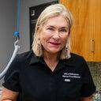
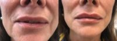

Name: The Skin Care Center at Gulf Coast Plastic Surgery – Pensacola
Display name: The Skin Care Center at Gulf Coast Plastic Surgery – Pensacola
Mission: The Skin Care Center at Gulf Coast Plastic Surgery offers the most advanced, non-surgical rejuvenating treatments to let every patient experience the way to beautiful living. We offer many different products and treatments, always customized to fit your individual skin care needs and your busy lifestyle. All clients receive a consultation to ensure the safest, most effective approach, with the best outcome possible, often requiring minimal down time.
Website: https://www.theskincarecenter.com/
Office hours: Mon: 8:30am – 7:00pm
Tue: 8:30am – 7:00pm
Wed: 8:30am – 7:00pm
Thu: 8:30am – 7:00pm
Fri: 8:30am – 5:00pm
Phone: (850) 397-3610
Twilio phone: (850) 397-3610
Address: 4707 North Davis Highway, Pensacola, Florida, USA, 32503
City: Pensacola
State: Florida
Country code: US
Postal code: 32503
Phone: +18504740155
Neighborhood: Southeast Pensacola
Country: USA
GPS coordinates on map: 30.4655496,-87.2250137
Treatments:
- Botox
- Thread Lift
- Juvederm
- Restylane
- Radiesse
- Tattoo Removal
- Laser Hair Removal
- Laser Resurfacing
- Fraxel Laser
- Phenol Peel
- Chemical Peel
- Glycolic Peel
- Blue Peel
- TCA Peel
- Dermabrasion
- YAG Laser
- IPL
- Nonsurgical Nose Job
- Retin-A
- Hyaluronidase
- Latisse
- Lip Fillers
- Mole Removal
- Skin Rejuvenation
- Scar Removal
- Jessner Peel
- Laser Peel
- Dermal Fillers
- Fractional Laser
- Ultherapy
- PicoSure
- Botox for Migraines
- Voluma
- Tazorac
- Forehead Reduction
- G-Shot
- Restylane Silk
- Eyebrow Transplant
- Kybella
- HydraFacial
RealSelf Info
Profile created: May 30, 2016
Profile modified: Aug 7, 2023
Business type: Practice
Review count: 254
Rating: 4.9
Rating time spent: 5
Rating answered questions: 5
Rating bedside manner: 5
Rating after care: 5
Rating payment process: 5
Rating wait times: 5
Rating courtesy: 5
Rating responsiveness: 5
RealSelf’s PRO: Yes
Realself network status: candidate
Special Offers
Heading
Start Time / End Time
Detail
Treatments
Free Consultation & Treatment Plan
Aug 3, 2023 /
May 17, 2033
Do you want to look your best but aren’t sure where to start? Consultations with our highly trained nurse practitioners and medical aestheticians are always free. Call us at 850-474-0155 to schedule a consultation for your personalized treatment plan.
Any treatment
Save with Skin Care Membership
Aug 3, 2023 /
May 17, 2033
-Huge discounts on services you use the most. Select eClassic or Premium membership and save up to 20% on products and 25% on treatments, including Botox, fillers, PRP Facials, Hair Restoration, and more. Premium Membership includes a monthly HydraFacial, Microneedling Membership offers monthly microneedling treatment.
Any treatment
The Skin Care Center at Gulf Coast Plastic Surgery - Pensacola
Doctors
Peter N. Butler, MD, FACS
Name: Peter N. Butler, MD, FACS
Statement: Dr. Peter N. Butler is a board-certified plastic surgeon who has been in practice for over two decades. He specializes in aesthetic and reconstructive surgery of the breast, face, and body at Gulf Coast Plastic Surgery in Pensacola, Florida. He is especially skilled in breast enhancement, tummy tucks, and complete mommy makeovers.
“As a plastic surgeon, it's my job to make sure my patients look and feel great about themselves,” says Dr. Butler. “Just as each person is unique, so is each surgery. I carefully listen to my patients and take the time to answer all their questions. My patient and I are a team, and together we can achieve beautiful results.”
Dr. Butler obtained his undergraduate degree in biology at Florida State University in Tallahassee and then pursued his medical degree at the University of Florida College of Medicine in Gainesville. Afterward, he completed a residency in general surgery at New Hanover Regional Medical Center with the University of North Carolina. He also completed a fellowship in plastic surgery at the University of Utah Health Sciences Center in Salt Lake City.
Dr. Butler is board certified by the American Board of Plastic Surgery. He has been awarded membership into the American College of Surgeons and the American Society of Plastic Surgeons.
When Dr. Butler isn't helping his patients achieve their aesthetic goals, he serves as an associate clinical professor at Florida State University College of Medicine. He’s also a credentialed provider for the Anderson Physicians' Network.
Began aesthetic medicine in: 2000
Rating: 4.9
Statement: Dr. Jocelyn E. Leveque has been a top board-certified plastic and reconstructive surgeon for over 23 years. She is one of the founding partners of Gulf Coast Plastic Surgery in Pensacola, Florida, which has been selected as Best Plastic Surgery Practice by the Pensacola News Journal.
Dr. Leveque specializes in breast enhancement, tummy tucks, liposuction, and body lifts, as well as facelifts, brow lifts, and eyelid lifts.
Having performed thousands of plastic surgery procedures throughout her career, Dr. Leveque takes pride in her ability to empathize with her patients’ desire to restore their body image and confidence after pregnancy, weight loss, or cancer treatment.
“It is my mission to provide the highest quality of care to my cosmetic and reconstruction patients,” says Dr. Leveque. “As a woman, I have a unique perspective that allows me to better understand the goals, expectations, and concerns of my female patients.”
Dr. Leveque earned her medical degree from the University of South Alabama College of Medicine in Mobile, where she remained to complete a five-year general surgery residency (ranked as one of the top general surgery programs in the country). Dr. Leveque served as chief resident during her final year and was appointed as a clinical instructor in the department of surgery.
She went on to complete a plastic surgery residency at Tulane University in New Orleans, Louisiana, where she was later appointed as an assistant professor of surgery in the department of plastic surgery.
Today, in addition to her private practice, Dr. Leveque is a clinical assistant professor at Florida State University, department of surgery in Tallahassee, as well as an appointed physician for the Pensacola Blue Wahoos.
Dr. Leveque is a fellow of the American College of Surgeons and a member of the American Society of Plastic Surgeons, the American Society for Aesthetic Plastic Surgery, and the Southeastern Society of Plastic Surgeons.
Began aesthetic medicine in: 1998
Rating: 4.9
Nathan W. Patterson, MD, FACS
Name: Nathan W. Patterson, MD, FACS
Statement: Dr. Patterson completed his Medical Degree at the University of Alabama School of Medicine. His general surgery training began at Carraway Methodist Medical Center and was completed at the world renowned Alton Ochsner Medical Foundation in New Orleans. He fulfilled his plastic surgery residency at the University of California in San Diego where he worked with numerous internationally recognized plastic, head & neck, and maxillofacial surgeons.
Dr. Patterson lives in Gulf Breeze with his wife, Kam, and his son, Pierce.
Began aesthetic medicine in: 2002
Rating: 4.6
Staff

Alice Bohannon, PhD, A.R.N.P.
Name: Alice Bohannon, PhD, A.R.N.P.
Position: Nurse Practitioner
Years experience: 15
Biography: Alice began her nursing career after graduating from Florida State University. She then received her Masters Degree in Nursing from the University of San Diego and a PhD from the University of Miami. Many years of her career have been involved in teaching, first as a clinical nurse educator in hospital settings, and then in various academic positions. Alice says she believes she has found her “niche” in the world of nursing when she began working at The Skin Care Center at Gulf Coast Plastic Surgery as a nurse practitioner. Alice works closely with each individual, listens to them attentively and collectively they develop a plan of care and treatment. “My position here has allowed me to be artistic and make people happy by enhancing each clients own natural beauty.” To schedule an appointment with Alice, give us a call at 850-474-0155.
Name: Amanda Davis, A.R.N.P
Position: Nurse Practitioner
Years experience: 14
Biography: Amanda Davis is an Advanced Registered Nurse Practitioner (A.R.N.P.) with 10 years of experience.. She was the undergraduate class president and was Valedictorian of her undergraduate and graduate nursing classes at Florida State University. Amanda has a passion for helping people look better and feel better about themselves. She is an expert injector who prides herself with maintaining a natural look with her injection techniques. She is honest and compassionate. She takes time to listen to her patients and treats every patient with dignity and respect. She strives to provide exceptional care to all her patients. She believes that her work is a balance of skill and artistry. When it comes to achieving satisfying results, she feels it is important for her patients to make informed decisions and she works closely with patients to reach their goals. To schedule an appointment with Amanda, give us a call at 850-474-0155.
Name: Lisa Williams
Position: Nurse Practitioner
Years experience: 5
Name: Alexandria Giannini
Position: Nurse Practitioner
Years experience: 5
Name: Lindsey Higdon, R.N.
Position: Registered Nurse
Years experience: 16
Biography: Lindsey Higdon is a Registered Nurse that did her studies at Pensacola State College and the University of West Florida. She has been in the skin care industry for 12 years and brings a wealth of knowledge and experience to our practice. She has been at Gulf Coast Plastic Surgery since 2008 and has trained with some of the highest ranked injectors in the industry. Lindsey is a highly trained aesthetic specialist who is able to work with you on an individual basis to provide the cosmetic appearance you desire. She takes great pride in her work and makes sure that a patient leaves our office looking and feeling their very best. Lindsey approaches each individual with understanding, patience, and compassion. She works very closely with each patient to help achieve the desired goals and enhance their own natural beauty. To schedule an appointment with Lindsey, give us a call at 850-474-0155.
Name: Lauren Blackledge
Position: Aesthetician
Years experience: 14
Biography: Lauren received her esthetician license from Gulf Coast Institute of Career Development in Pensacola in 2009 and has been working as an esthetician ever since. She started her career at a destination spa where she spent three years building her knowledge and experience in skin care. She later decided to further her studies with the Advanced Esthetics program at Pensacola State College when she decided she wanted to work in the medical side of her profession. Lauren has been with Gulf Coast Plastic Surgery since 2012 and has loved seeing the transformations she has made in her clients’ skin! Since joining GCPS, Lauren has attended multiple trainings with all of the product lines we carry (Obagi, SkinMedica, gloMinerals and HydraFacial) to stay up to date to help further your skin care goals. To schedule an appointment with Lauren, give us a call at 850-474-0155.
Name: Blair Miller
Position: Aesthetician
Years experience: 3
Biography: Blair Miller brings a wealth of expertise and a warm and welcoming smile to The Skin Care Center at Gulf Coast Plastic Surgery. Blair is a graduate of Pensacola State College’s Esthetics Program and is a Licensed Medical Esthetician. A Pensacola native, Blair’s passion for skincare started at a young age. She prides herself on truly listening to her patient’s concerns. Her goal is to fulfill the skincare needs of her patients and give them the confidence that comes from radiant skin. Blair is always learning and makes a point to stay current on all the latest innovations in skincare. Whether it is a luxury facial, and IPL treatment, micro-needling, or HydraFacial, Blair is able to utilize every tool in The Skin Care Center’s toolbox to give her patient’s skin a healthy glow. To schedule an appointment with Blair, give us a call at 850-474-0155.
Name: Ashley Wentz
Position: Aesthetician
Years experience: 9
Biography: Ashley brings a wealth of knowledge and a love for skincare to Gulf Coast Plastic Surgery’s Skin Care team. Born and raised in Warner Robins, GA, Ashley has been a licensed cosmetologist/aesthetician since 2014. While experienced in all aspects of cosmetology, Ashley’s passion has always been skincare. Says Ashley, “My favorite treatment is HydraFacials. Not only do patients see immediate results, but it is also fully customizable so that the HydraFacial suits each patient’s individual skincare needs.” Ashley sees herself as her patients’ partner in helping them achieve beautiful, glowing skin. Whether she is providing advice on how to address a skin issue, administering a treatment protocol, or suggesting the best products to use at home, patients can count on Ashley’s expertise to help them look their best. To schedule an appointment with Ashley, give us a call at 850-474-0155.
Practice's answers
Question
Answer Header & Date
Answer Snippet
How do I reduce nostril flaring without decreasing upper teeth exposure?
Botox to decrease nasal flare
Aug 12, 2021
You can decrease nasal flare with Botox by injecting it into the nasal ala. This placement should not change your smile in any way. The placement that can change your smile is typically lateral to the ala.
What are the age restrictions for lip fillers/injections like Juvederm?
Legal age for Juvederm
Apr 22, 2021
The age studied by the makers of Juvederm (Allergan) is 21 and up. With this being said, many providers will still treat a patient 18 years and older with verbal and written consent.
Can Botox lift nasolabial folds?
nasolabial folds
Apr 22, 2021
Dermal filler in the cheeks is the better option for cheek lifting and softening the nasolabial folds. There is an injection spot near the nasal ala that will soften the nasolabial folds, but it doesn't have a cheek lifting ability.
Is lip filler less painful the longer you leave the numbing cream on?
Pain control
Jan 3, 2021
Different preparations (cream versus gel) and their properties help determine how long your provider leaves the numbing treatment on before injection, Usually, the longer the better. Ice is also a great addition to help decrease pain and bruising.
After my lip flip I now have a crease about my top lip when I smile. Could more Botox fix thi
Higher Botox dose
Dec 11, 2020
The answer is difficult without seeing photos, but depending on your anatomy, you may be able to place 1-2 where the crease is to soften the transition.
Latest Before And After Photos
-
-
Dr The Skin Care Center At Gulf Coast Plastic Surgery – Pensacola 33 Year Old Lady Treated With Juvederm
-

-
54 Year Old Mrs. Treated With Juvederm Image By Doctor The Skin Care Center At Gulf Coast Plastic Surgery – Pensacola
Last updated on 12/10/2023